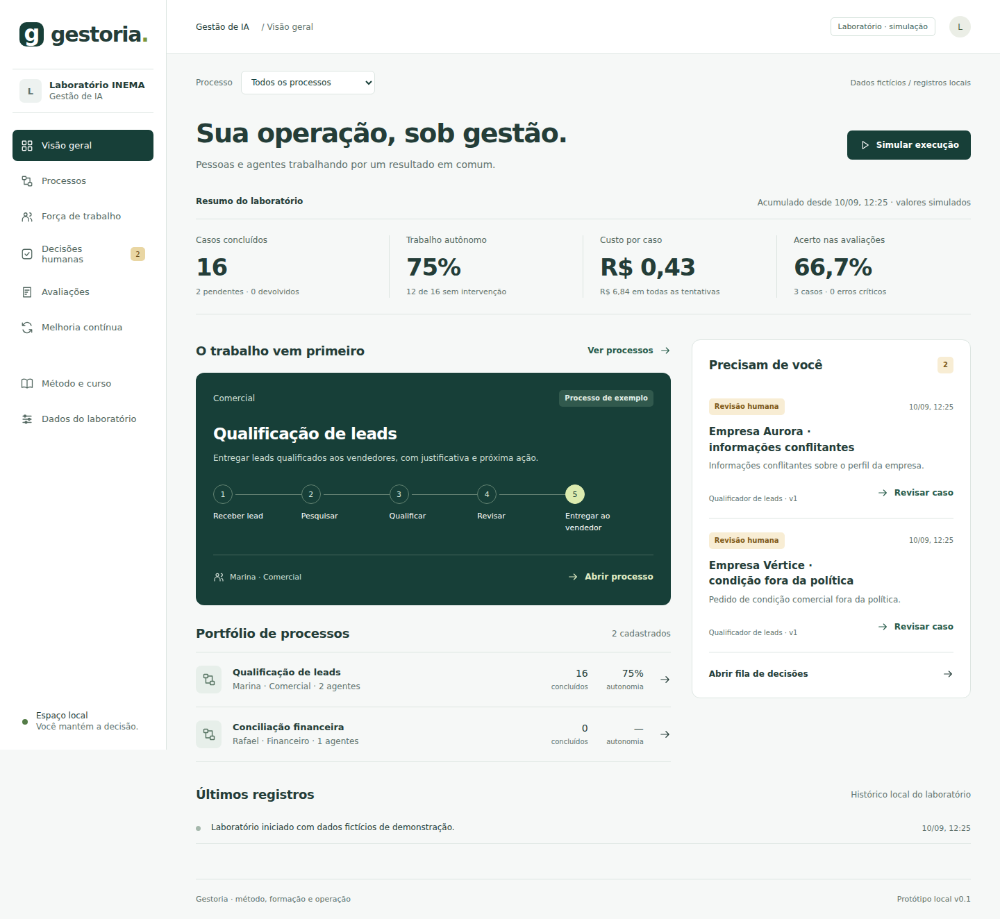

Organize cargos digitais, responsabilidades e autonomia. Acompanhe decisões, avaliações e melhorias em um laboratório que funciona no seu navegador.
A primeira versão funciona com dados locais e cenários fictícios. Não executa modelos nem acessa CRM, ERP ou e-mail. As integrações reais têm um plano técnico separado.
Defina objetivo, dono humano, etapas e meta. Dê a cada agente uma missão, entradas, entregas e limites.
Simule situações normais e exceções. Registre decisões humanas e consulte os critérios de promoção de cada versão.
Compare esperado e produzido, acompanhe indicadores e documente experimentos no ciclo LOOP-R.
Comece com um único processo. O supervisor e as integrações fazem parte da arquitetura futura; o laboratório já permite desenhar e praticar a gestão.
Para experimentar a versão publicada, basta um navegador moderno. Para editar o código localmente, use Git, Node.js 22.12+ ou 24+ e npm.
Abra a ferramenta. Os dados ficam neste navegador e nesta origem; exporte uma cópia JSON para guardar seu trabalho.
node --version npm --version git --version
O exemplo de qualificação comercial é fictício. Use-o para conhecer o fluxo e depois cadastre o seu recorte com dados anonimizados.
Use o botão “Abrir ferramenta”. Para rodar uma cópia local, execute:
git clone https://github.com/inematds/gestoria.git cd gestoria npm install npm run dev
Em Processos, crie uma operação com objetivo, responsável, etapas, volume, tempo atual e meta. Comece por um recorte, como preparar a qualificação comercial.
Em Força de trabalho, registre missão, entradas, saída, responsável e o que o agente pode e não pode fazer. Ferramentas, modelo e Skills são metadados planejados nesta versão.
Na Visão geral, escolha um processo e simule uma rotina, dados conflitantes ou uma solicitação fora da política. Em Decisões humanas, aprove ou devolva com justificativa.
Registre resultado esperado, resultado produzido e classificação humana. Consulte a ficha do agente: a promoção didática exige 100 casos da versão atual, meta atingida, ausência de erro crítico e pendências resolvidas.
Em Melhoria contínua, registre problema, hipótese e teste. Para validar e promover um experimento, acrescente evidências. A alteração do agente cria uma nova versão e exige nova avaliação.
Em Dados do laboratório, exporte a cópia JSON. Uma importação substitui os registros atuais após confirmação. Não há conta nem sincronização entre dispositivos.
Captura real do aplicativo com os dados fictícios iniciais. Os indicadores são calculados a partir dos registros do laboratório.

Uma aprovação humana aumenta os casos concluídos, mas não o trabalho autônomo. Casos pendentes e devolvidos aparecem separados.
Custo inclui todas as tentativas. As avaliações contam apenas para a versão atual do agente.
A proposta tem dez módulos e um projeto aplicado. O plano já está disponível; as aulas estão em desenvolvimento.
Conhecer o plano do cursoA evolução é guiada por evidências. O que está disponível hoje é o laboratório; as próximas fases precisam de sistemas e dados autorizados.